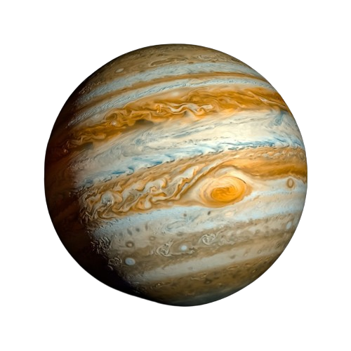

Jupiter
Júpiter é o maior planeta do Sistema Solar, estando situado entre Marte e Saturno.
Seu tamanho rende-lhe vários satélites naturais orbitando ao seu redor, cerca de 70.
Durante a noite, esse planeta pode ser visto a olho nu, sendo a segunda estrela mais
brilhante, atrás apenas de Vênus, o segundo planeta na ordem usando-se o Sol como referência.
